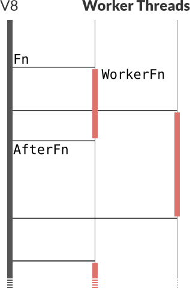

Konstantin Käfer
kkaefer
node.js extensions
with C++ and V8
C++ is faster than JavaScript.
Is it?
If possible, write it in JavaScript.
JS ⟷ C++ boundary is slow to cross
function() { return Math.floor(133.7 / Math.PI); }
| native JS |
~83,333,333 calls/s |
| V8 return |
~13,333,333 calls/s |
| V8 async |
~1,745,200 calls/s |
| thread pool |
~83,682 calls/s (0.1%) |
Why C++?
- V8 is written in C++
- Wrapping existing C/C++ libraries
- Use more threads
The bare minimum
modulename.cpp
Requiring from JavaScript
$ node
> require('./build/Release/modulename.node');
{}
>
Develop with
$ CXX=clang node-waf configure
Also test with GCC
Defining functions
modulename.cpp
HandleScope cleans up handles created in this function- Preserve returned value with
scope.Close()
Exporting functions
modulename.cpp
target is what node.js calls exports
$ node
> var mod = require('./build/Release/modulename.node');
{ theAnswer: [Function] }
> mod.theAnswer();
42
>
Function arguments
modulename.cpp
args contains elements of type Value- Cast to specific type with
To* functions
Callback functions
modulename.cpp
Call automatically retains arguments- Don’t forget
HandleScope scope at the top
The thread pool

- JavaScript is single-threaded
- I/O and CPU in thread pool
- No V8 access from worker!
Passing data to the thread pool
- Not required, just a convention
Persistent is a Handle that stays around until diposed of
Worker function
- Function
AsyncWork is blocking
- Do not use any V8 code, not even variable reads
- Convert values to POD or C++ types and store them in the baton
After function
callback function is Permanent, need to delete manually
Wrap callbacks in TryCatch
node::FatalException throws at the top of the event loop- Catchable with
process.on('uncaughtException', ...)
API design
- Challenge: Synchronous ➞ Asynchronous
- Use
EventEmitter
- Chainable calls
- Instantiating objects vs. functions
- Make it hard to misuse
- Make it feel as “JavaScripty” as possible
node-sqlite3 API
- No
open() function, new implicitly opens
- Statements are executed as soon as database is open
- No need to “close” the database
- No callback?
'error' event on the Database object
node-blend API
- Blends two images of the same size
- No need to create objects with
new if you don’t require state
More documentation
kkaefer